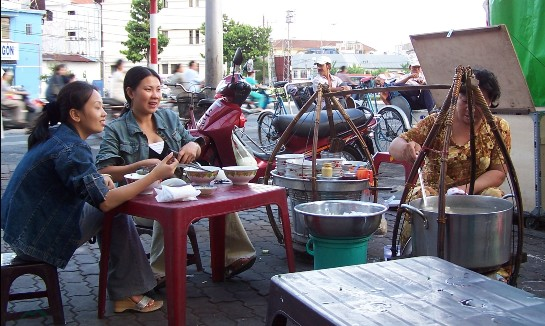
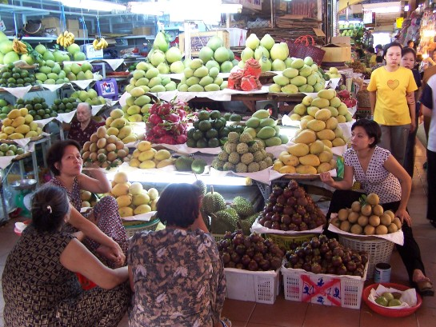
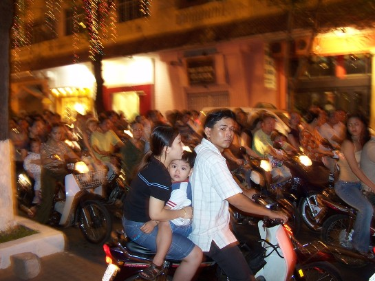

First and foremost, you must try Street Food - delicious, cheap, and authentic foods on the city’s sidewalks and alleys.
You can find lots of tropical fruits at the local markets or fruit shops along the street. My favorites are Mangosteen, Dragon Fruit Longan, and Rambutan.
The traffic of Saigon is an unforgettable experience, so just take a deep breath before crossing the street.
Believe it or not, you can actually fit a family of 5 on a scooter!
Lastly, my kid loves to do Rubik’s Cube competitions. Here is a kid solving with just one hand. So amazing!